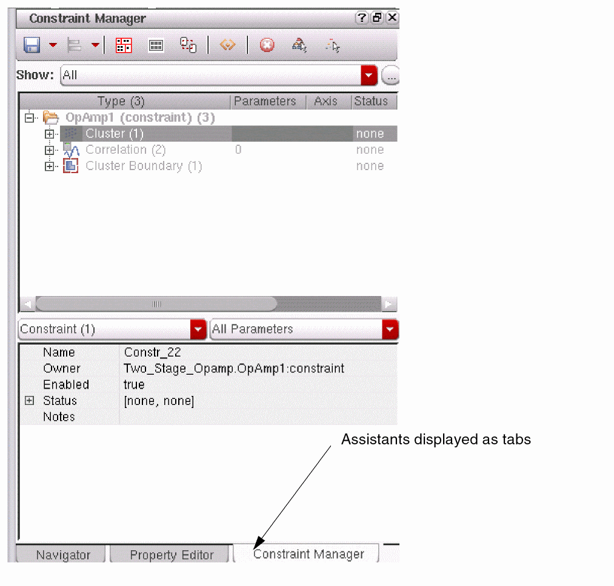

10
Working with Workspaces
Cadence provides a set of workspaces designed to help you perform a set of related tasks, such as working with constraints or performing interactive searches within your design. Each workspace is tailored to a particular application, cellview, or work objective.
As well as being able to select from a set of Cadence-supplied workspaces, you can create your own workspaces that consist only of the user-interface components you want to assist you when working with a particular application, subapplication, or view type.
You can customize a workspace for a particular work objective. For example, you can create a custom configuration for schematic setup (such as schematicSetup) and another custom configuration for schematic modifications (such as schematicMod).
You can use a workspace to change the way you view your data by choosing what assistant panes and toolbars appear in your window, where they appear, and whether each assistant pane is docked or floating. You cannot use a workspace to manipulate (filter or reduce) the underlying data itself. For example, you cannot use a workspace to restrict which parameters appear on the Property Inspector assistant pane or to program which label display objects appear on the main schematic canvas.
You cannot remove or edit any of the following user-interface components as part of your custom workspace:
-
Main menu bar (menu banner) appearing at the top of a design session window
You cannot alter the existence, location, or content of the main menu bar. -
Main menu bar submenu content
You cannot remove any menu items from the main menu bar submenus or exchange them between menus. -
Toolbar buttons/icons
You cannot add or remove tool buttons from a toolbar or swap them between toolbars. -
Context-sensitive menus: right-click menus
You cannot change the content of these menus. -
Menu bars, toolbars, context-sensitive menus associated with an assistant pane
You cannot modify any of these additional user-interface components that might appear as part of an assistant pane in your workspace.You can save time creating your setup preferences by selecting a Cadence workspace or other custom configuration that closely matches your requirements as a starting point. For more information, see Customizing a Cadence Workspace.
See the following sections for more information:
- Selecting a Workspace
- Adding Assistant Panes and Toolbars to a Workspace
- Removing Items from Your Workspace
- Docking or Floating an Assistant Pane
- Getting Help on an Assistant Pane
- Hiding Assistant Panes
- Modifying the Size or Location of an Assistant Pane
- Modifying the Length or Location of a Toolbar
- Saving a Workspace
- Loading a Custom Workspace
- Deleting a Custom Workspace
- Customizing a Cadence Workspace
- Reverting to a Saved Workspace
- Setting the Default Workspace for an Application
Selecting a Workspace
To select a workspace using the menu banner, do the following:
-
Choose Window – Workspaces.
A submenu of workspaces appears listing only those configurations available for use with the current cellview/application.
-
Select the workspace you want to apply to the current session window.
The program applies the workspace you selected to the current session window.
Alternatively, you can select a workspace from the drop-down combo box on the Workspaces toolbar.

Assistant panes that are part of a Cadence workspace are initially docked. You can modify the arrangement of your session window and save it as a custom workspace (see “Saving a Workspace”).
Adding Assistant Panes and Toolbars to a Workspace
You can add assistant panes and toolbars to your workspace using the Window menu or a right-click menu as described below.
- Adding a Toolbar or an Assistant Pane Using the Right-Click Menu
- Adding a Toolbar Using the Window Menu
- Adding an Assistant Pane Using the Window Menu
Adding a Toolbar or an Assistant Pane Using the Right-Click Menu
To add an assistant pane or toolbar to your custom workspace using the right-click menu, do the following:
-
Right-click the title bar of an assistant pane or a toolbar.
A menu of those assistant panes and toolbars available to the current application/view type appears. Active items appear with a check mark to the left of their names.
-
Select an item that is not currently active (does not have a check mark to the left of its name).
The item appears in your workspace. If you display the right-click menu again, you will see a check mark next to the item.
Adding a Toolbar Using the Window Menu
To add a toolbar to your custom workspace using the Window menu, do the following:
-
Choose Window – Toolbars.
A submenu of toolbars you can configure for the current application/view type appears. Active toolbars appear with a check mark to the left of their names.
-
Select a toolbar name that is not currently active.
The toolbar appears in your workspace. If you display the submenu again, you will see a check mark next to the toolbar name.
Adding an Assistant Pane Using the Window Menu
To add an assistant pane to your custom workspace using the Window menu, do the following:
-
Choose Window – Assistants.
A submenu of assistant panes you can configure for the current application/view type appears. Active panes appear with a check mark to the left of their names.
-
Select an assistant pane that is not currently active.
The pane appears in your workspace. If you display the submenu again, you will see a check mark next to this pane’s name.
Removing Items from Your Workspace
You can remove assistant panes and toolbars from your workspace using the Window menu or a right-click menu as described below.
- Removing a Toolbar or an Assistant Pane Using the Right-Click Menu
- Removing a Toolbar Using the Window Menu
- Removing an Assistant Pane Using the Window Menu
Removing a Toolbar or an Assistant Pane Using the Right-Click Menu
To remove an assistant pane or a toolbar from your custom workspace using the right-click menu, do the following:
-
Right-click the title bar of an assistant pane or a toolbar.
A menu of those assistant panes and toolbars available to the current application/view type appears. Active items appear with a check mark to the left of their names.
-
Select an active item to remove the check mark.
The item disappears from the workspace. If you display the right-click menu again, the check mark no longer appears next to the item.
Removing a Toolbar Using the Window Menu
To remove a toolbar from your custom workspace using the Window menu, do the following:
-
Choose Window – Toolbars.
A submenu of toolbars you can configure for the current application/view type appears. Active toolbars appear with a check mark to the left of their names. -
Select the toolbar you want to remove.
The toolbar disappears from your workspace. If you display the submenu again, the check mark no longer appears next to the toolbar name.
Removing an Assistant Pane Using the Window Menu
To remove an assistant pane from your custom workspace using the Window menu, do the following:
-
Choose Window – Assistants.
A submenu of assistant panes you can configure for the current application/view type appears. Active panes appear with a check mark to the left of their names. -
Select the assistant pane you want to remove.
The pane disappears from your workspace. If you display the submenu again, the check mark no longer appears next to this pane’s name.
Getting Help on an Assistant Pane
To get help on an assistant pane, do the following:
-
In the upper right corner of the pane, click the question mark icon.
The Help page for the assistant appears in the Cadence Help window.
Docking or Floating an Assistant Pane
You can make a docked assistant pane float or dock a floating assistant pane using the Float/Dock button in the upper right corner of each pane. The Float/Dock button appears between the

To make a docked assistant pane float, do one of the following:
- In the upper right corner of the docked pane, click the Float button.
- In the title bar of the docked pane, double-click.
-
Drag a docked pane by its title bar to an open area and release the mouse button.
The pane is now floating.
To dock a floating assistant pane, do one of the following:
- In the upper right corner of the floating pane, click the Dock button.
- In the title bar of the floating pane, double-click.
-
Drag the floating pane close to any edge of your session window until you see its outline where you want it and drop it.
The pane is now docked.
See also “Modifying the Size or Location of an Assistant Pane” for additional information.
Displaying Assistant Panes as Tabs
You can display assistant panes as tabs by dragging and dropping one assistant on top of another. This can be useful if you have a busy workspace and need to maximize space.
To display an assistant in a tabbed format:
-
Click and drag the title bar of one assistant and drop it on the body area of another assistant.You can click the Float button (see Docking or Floating an Assistant Pane) to detach an assistant from an existing group of tabbed assistants. Alternatively, you can drag the assistant away from the grouped assistants.
Hiding Assistant Panes
To hide an assistant pane, do the following:
-
Click the Hide (x) button in the upper right corner of the pane.
The program removes the pane from your workspace.You can add the assistant pane back to your workspace using the Window menu or a right-click menu as described in “Adding Assistant Panes and Toolbars to a Workspace”.
See also the following topics:
Hiding All Assistant Panes with a Single Action
To hide all assistant panes with a single action, do one of the following:
-
On the far right end of the Workspace toolbar, click the Show/Hide Assistants button.
- Choose Window – Assistants – Hide All.
In either case, all assistant panes disappear from your workspace.
Toggling Assistant Panes
To toggle assistant panes off, do the following:
-
On your keyboard, press the
F11key.
Any assistant panes you had open in your workspace vanish from the session window.
When you press F11 again, the assistant panes you had open in your workspace appear once again in the session window.
Ctrl+F11 can also be used to toggle all toolbar display, and Shift+F11 will toggle both toolbar and assistant display.Modifying the Size or Location of an Assistant Pane
How you modify the size or change the location of an assistant pane depends on whether the pane is docked or floating:
- Modifying the Size of a Docked Assistant Pane
- Modifying the Size of a Floating Assistant Pane
- Changing the Location of a Docked Assistant Pane
- Changing the Location of a Floating Assistant Pane
Modifying the Size of a Docked Assistant Pane
To modify the size of a docked assistant pane, do the following:
-
Click-drag any edge.You can identify an edge that you can move when the mouse cursor appears as two parallel lines with outward-facing arrows:Your assistant pane appears taller or shorter, wider or narrower, according to how you reposition the edge.

Modifying the Size of a Floating Assistant Pane
To modify the size of a floating assistant pane, do the following:
-
Click-drag any edge or corner.
Your assistant pane appears taller or shorter, wider or narrower, according to how you reposition the edge or corner.
Changing the Location of a Docked Assistant Pane
To change the location of a docked assistant pane, do the following:
-
Drag-and-drop the pane by its title bar to a new location within the session window.
The program adjusts the size and location of other items in the window to fit the assistant pane in its new location.If the new location falls outside the session window, the assistant pane becomes floating (see Changing the Location of a Floating Assistant Pane.). You can drag-and-drop a floating pane back into your session window to dock it. See also “Docking or Floating an Assistant Pane” for additional information.
Changing the Location of a Floating Assistant Pane
To change the location of a floating assistant pane, do the following:
-
Drag-and-drop the pane by its title bar to a new location.If you drag the floating assistant pane to a location within your session window, the pane will become docked by default. You can prevent a floating pane from docking by holding down the Ctrl key during the drag-and-drop operation.If your pane becomes docked when you change its location, the program adjusts the size and location of other items in the window to fit the assistant pane in its new location.If the new location falls outside the session window, the assistant pane becomes floating. You can drag-and-drop a floating pane back into your session window to dock it.
See “Docking or Floating an Assistant Pane” for additional information.
Modifying the Length or Location of a Toolbar
To modify the length of a horizontally-oriented toolbar, do the following:
-
Click-drag its handle to the left or right.You can identify the handle of a toolbar when the mouse cursor appears as four outward-facing arrows:The toolbar appears longer or shorter depending on whether you dragged its handle to the left or to the right. The program adjusts the length of any neighboring toolbars so that they fit the length of the session window.
To modify the height of a vertically-oriented toolbar, do the following:
-
Click-drag its handle up or down.
The toolbar appears taller or shorter depending on whether you dragged its handle up or down. The program adjusts the length of any neighboring toolbars so that they fit the height of the session window.
To change the location of a toolbar, do the following:
-
Drag-and-drop the toolbar by its handle to a new location along any edge of the session window (top, left, right, bottom).
The program makes room at the new location for the relocated toolbar.
The modifications you make last for the duration of the current session unless you save the modified layout as a custom workspace (see “Saving a Workspace”).
Saving a Workspace
You can save a custom workspace that is based on an existing, default workspace or a new version of a default workspace. For example, you could create a Constraints_Schematics workspace to complement the existing Constraints workspace or you could save a new version of the Constraints workspace.
To save your workspace, do the following:
-
On the Workspace toolbar, click the Save Workspace icon.
The Save Workspace form appears.
- In the Select workspace name drop-down combo box, either select a workspace name or type a new name.
-
Select the Overwrite existing workspace check box if you want to overwrite the existing workspace.
If the check box is not selected and the name of the workspace is same as that of an existing workspace, the following message is displayed.
Click Yes to continue.
- In the Select path list area, select a location.
-
Click OK.
A message appears in the output area of your Command Interpreter Window indicating the name and location where the program saved your workspace. For example:Saved Workspace "myBasic" to "./.cadence/dfII/workspaces/adexl-schematic/myBasic.workspace"
Saved Workspace "myBasic" to "/home/user/.cadence/dfII/workspaces/adexl-schematic/myBasic.workspace
Loading a Custom Workspace
You can load a custom workspace using the Workspaces toolbar or the Window menu in your session window.
To load a custom workspace using the Workspace toolbar, do the following:
-
In the Workspace drop-down combo box, select a workspace.
The program configures your session window using the workspace you selected.
To load a custom workspace using the Window menu, do the following:
-
Choose Window – Workspaces – Load.
The Choose Workspace to Load form appears.
- In the Workspace drop-down combo box, select a workspace.
-
Click OK.
The program configures your session window using the workspace you selected.
Deleting a Custom Workspace
To delete a custom workspace, do the following:
-
Choose Window – Workspaces – Delete.
The Choose Workspace to Delete form appears.
- In the Workspace drop-down combo box, select the workspace you want to delete.
-
Click OK.
The program deletes the workspace. If you delete the current workspace, the program displays the default workspace.
Customizing a Cadence Workspace
To customize a Cadence workspace and save it, do the following:
- Select a Cadence workspace.
- Modify the Cadence workspace to your specifications.
-
Save your custom workspace.
You can check your setup.loc file to verify that the search settings are correct for displaying your customized workspace (see “Workspace Search Order”). For example, if you want a customized workspace to appear for all users, and the name of the customized workspace is the same as a Cadence workspace, you must edit the setup.loc file so that it checks your site-specific area first. If your setup.loc file checks the Cadence installation area first, the program will find the Cadence workspace first.
If you save a customized workspace to your site-specific area using a name that matches a Cadence workspace, and you want the customized configuration to appear for all users, you must edit the setup.loc file such that it checks your site-specific area first. If your setup.loc file checks the Cadence installation area first, the program will find the Cadence workspace first.
Reverting to a Saved Workspace
To revert to the last version of the current workspace saved to disk, do the following:
-
Choose Window – Workspaces – Revert to Saved.
The last-saved version of the current workspace appears in the session window.
Setting the Default Workspace for an Application
To select a current workspace as the default for a particular application, do the following:
-
Choose Window – Workspaces – Set Default.
The Set Default Workspace form is displayed.
-
From the Select workspace name drop-down combo box, select the workspace you want to use as the new default.
This workspace will appear for each subsequent invocation of the current application or view type. -
Optionally, select the path where you want to save the default workspace specifications.
All writable locations in your CSF (Cadence Search File) will be listed. - Click the OK button to set the new default workspace for the current application.
Return to top